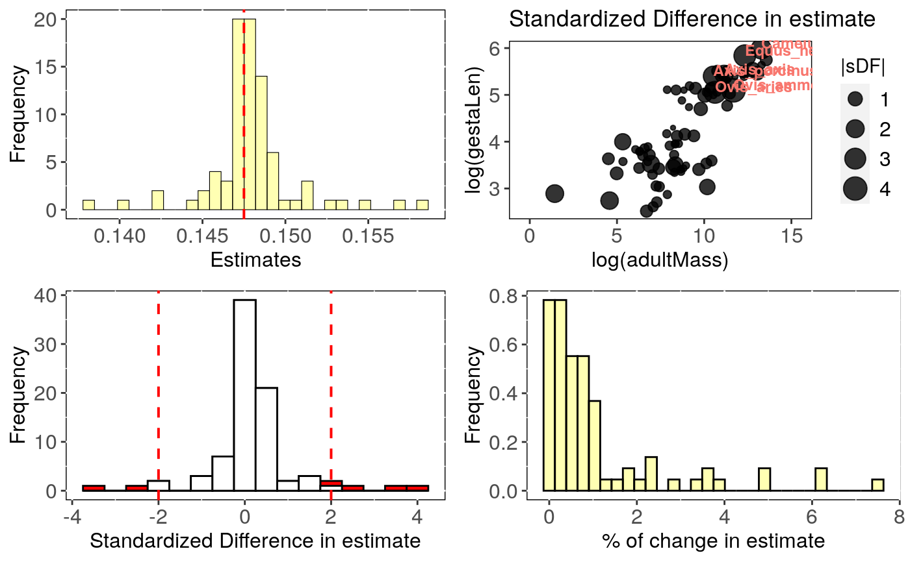
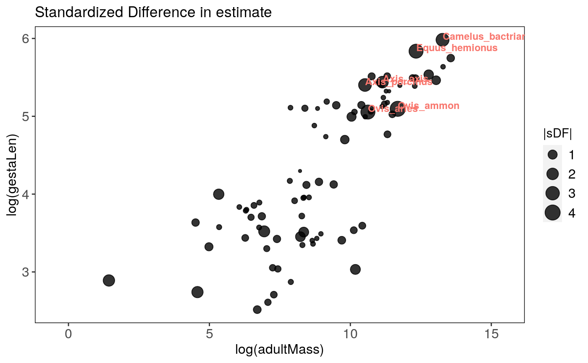

R/influ_phylm.R
influ_phylm.RdPerforms leave-one-out deletion analysis for phylogenetic linear regression, and detects influential species.
influ_phylm( formula, data, phy, model = "lambda", cutoff = 2, track = TRUE, ... )
| formula | The model formula |
|---|---|
| data | Data frame containing species traits with row names matching tips
in |
| phy | A phylogeny (class 'phylo') matching |
| model | The phylogenetic model to use (see Details). Default is |
| cutoff | The cutoff value used to identify for influential species (see Details) |
| track | Print a report tracking function progress (default = TRUE) |
| ... | Further arguments to be passed to |
The function influ_phylm returns a list with the following
components:
cutoff: The value selected for cutoff
formula: The formula
full.model.estimates: Coefficients, aic and the optimised
value of the phylogenetic parameter (e.g. lambda) for the full model
without deleted species.
influential_species: List of influential species, both
based on standardised difference in intercept and in the slope of the
regression. Species are ordered from most influential to less influential and
only include species with a standardised difference > cutoff.
sensi.estimates: A data frame with all simulation
estimates. Each row represents a deleted clade. Columns report the calculated
regression intercept (intercept), difference between simulation
intercept and full model intercept (DIFintercept), the standardised
difference (sDIFintercept), the percentage of change in intercept compared
to the full model (intercept.perc) and intercept p-value
(pval.intercept). All these parameters are also reported for the regression
slope (DIFestimate etc.). Additionally, model aic value (AIC) and
the optimised value (optpar) of the phylogenetic parameter
(e.g. kappa or lambda, depending on the phylogenetic model used) are
reported.
data: Original full dataset.
errors: Species where deletion resulted in errors.
This function sequentially removes one species at a time, fits a phylogenetic
linear regression model using phylolm, stores the
results and detects influential species.
All phylogenetic models from phylolm can be used, i.e. BM,
OUfixedRoot, OUrandomRoot, lambda, kappa,
delta, EB and trend. See ?phylolm for details.
influ_phylm detects influential species based on the standardised
difference in intercept and/or slope when removing a given species compared
to the full model including all species. Species with a standardised difference
above the value of cutoff are identified as influential. The default
value for the cutoff is 2 standardised differences change.
Currently, this function can only implement simple linear models (i.e. \(trait~ predictor\)). In the future we will implement more complex models.
Output can be visualised using sensi_plot.
Paterno, G. B., Penone, C. Werner, G. D. A. sensiPhy: An r-package for sensitivity analysis in phylogenetic comparative methods. Methods in Ecology and Evolution 2018, 9(6):1461-1467
Ho, L. S. T. and Ane, C. 2014. "A linear-time algorithm for Gaussian and non-Gaussian trait evolution models". Systematic Biology 63(3):397-408.
# Load data: data(alien) # run analysis: influ <- influ_phylm(log(gestaLen) ~ log(adultMass), phy = alien$phy[[1]], data = alien$data)#> Warning: NA's in response or predictor, rows with NA's were removed#> Warning: Some phylo tips do not match species in data (this can be due to NA removal) species were dropped from phylogeny or data#>#> | | | 0% | |= | 1% | |== | 2% | |== | 4% | |=== | 5% | |==== | 6% | |===== | 7% | |====== | 8% | |======= | 10% | |======== | 11% | |======== | 12% | |========= | 13% | |========== | 14% | |=========== | 15% | |============ | 17% | |============ | 18% | |============= | 19% | |============== | 20% | |=============== | 21% | |================ | 23% | |================= | 24% | |================== | 25% | |================== | 26% | |=================== | 27% | |==================== | 29% | |===================== | 30% | |====================== | 31% | |====================== | 32% | |======================= | 33% | |======================== | 35% | |========================= | 36% | |========================== | 37% | |=========================== | 38% | |============================ | 39% | |============================ | 40% | |============================= | 42% | |============================== | 43% | |=============================== | 44% | |================================ | 45% | |================================ | 46% | |================================= | 48% | |================================== | 49% | |=================================== | 50% | |==================================== | 51% | |===================================== | 52% | |====================================== | 54% | |====================================== | 55% | |======================================= | 56% | |======================================== | 57% | |========================================= | 58% | |========================================== | 60% | |========================================== | 61% | |=========================================== | 62% | |============================================ | 63% | |============================================= | 64% | |============================================== | 65% | |=============================================== | 67% | |================================================ | 68% | |================================================ | 69% | |================================================= | 70% | |================================================== | 71% | |=================================================== | 73% | |==================================================== | 74% | |==================================================== | 75% | |===================================================== | 76% | |====================================================== | 77% | |======================================================= | 79% | |======================================================== | 80% | |========================================================= | 81% | |========================================================== | 82% | |========================================================== | 83% | |=========================================================== | 85% | |============================================================ | 86% | |============================================================= | 87% | |============================================================== | 88% | |============================================================== | 89% | |=============================================================== | 90% | |================================================================ | 92% | |================================================================= | 93% | |================================================================== | 94% | |=================================================================== | 95% | |==================================================================== | 96% | |==================================================================== | 98% | |===================================================================== | 99% | |======================================================================| 100%#> $`Influential species for the Estimate` #> [1] "Ovis_ammon" "Ovis_aries" "Equus_hemionus" #> [4] "Camelus_bactrianus" "Axis_porcinus" "Axis_axis" #> #> $Estimate #> Species removed Estimate DIFestimate Change(%) Pval #> 1 Ovis_ammon 0.1585335 0.011033226 7.5 1.465612e-10 #> 2 Ovis_aries 0.1567383 0.009238004 6.3 2.949203e-10 #> 3 Equus_hemionus 0.1384028 -0.009097490 6.2 3.326380e-09 #> 4 Camelus_bactrianus 0.1400746 -0.007425680 5.0 2.741126e-09 #> 5 Axis_porcinus 0.1546280 0.007127723 4.8 3.792296e-10 #> 6 Axis_axis 0.1531949 0.005694542 3.9 4.646006e-10 #> #> $`Influential species for the Intercept` #> [1] "Ornithorhynchus_anatinus" "Ovis_ammon" #> [3] "Ovis_aries" "Axis_porcinus" #> [5] "Sorex_cinereus" #> #> $Intercept #> Species removed Intercept DIFintercept Change(%) Pval #> 1 Ornithorhynchus_anatinus 2.459667 0.09744173 4.1 4.298004e-10 #> 2 Ovis_ammon 2.275301 -0.08692386 3.7 2.181632e-09 #> 3 Ovis_aries 2.289397 -0.07282803 3.1 2.279349e-09 #> 4 Axis_porcinus 2.306031 -0.05619439 2.4 1.890367e-09 #> 5 Sorex_cinereus 2.412289 0.05006331 2.1 7.463555e-10 #># Most influential speciesL influ$influential.species#> $influ.sp.estimate #> [1] "Ovis_ammon" "Ovis_aries" "Equus_hemionus" #> [4] "Camelus_bactrianus" "Axis_porcinus" "Axis_axis" #> #> $influ.sp.intercept #> [1] "Ornithorhynchus_anatinus" "Ovis_ammon" #> [3] "Ovis_aries" "Axis_porcinus" #> [5] "Sorex_cinereus" #># You can specify which graph and parameter ("estimate" or "intercept") to print: sensi_plot(influ, param = "estimate", graphs = 2)